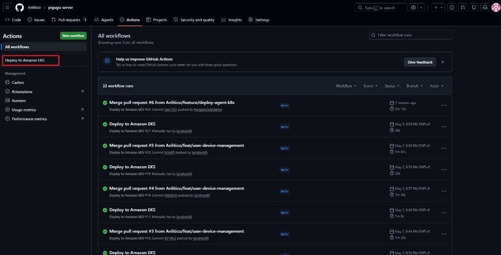
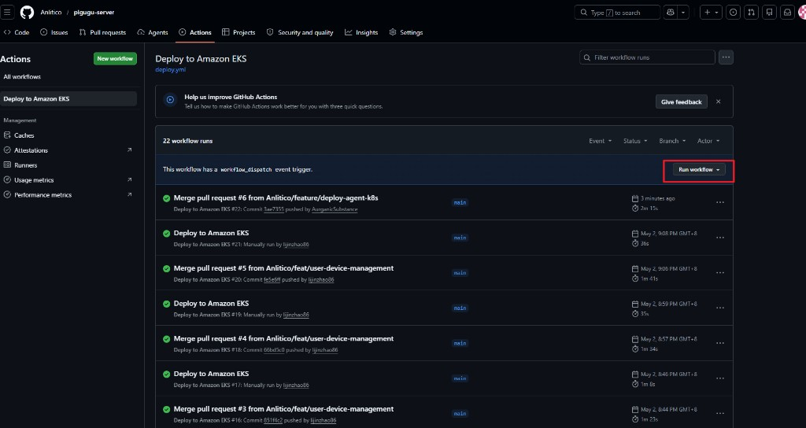
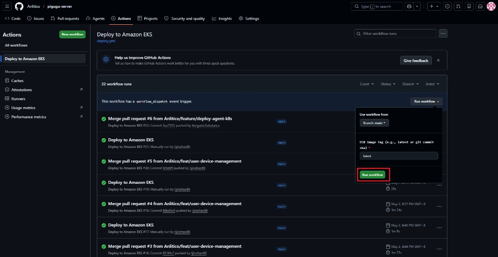

Repository: Anlitico/pigugu-server — how we go from a feature branch to production on main.
main).main.main (after merge)Deployment uses the Deploy to Amazon EKS workflow (deploy.yml). Continue from the repo Actions page: https://github.com/Anlitico/pigugu-server/actions.
Step 1. Wait until the merge has fully finished on GitHub—the PR is merged into main and any merge or branch protection checks you rely on have completed—before you go to Actions or start a production deploy.

main and deployment runs.
workflow_dispatch (manual runs). Open the Run workflow dropdown on the right.
latest or a git SHA). Click the green Run workflow button to start the production deploy to EKS.